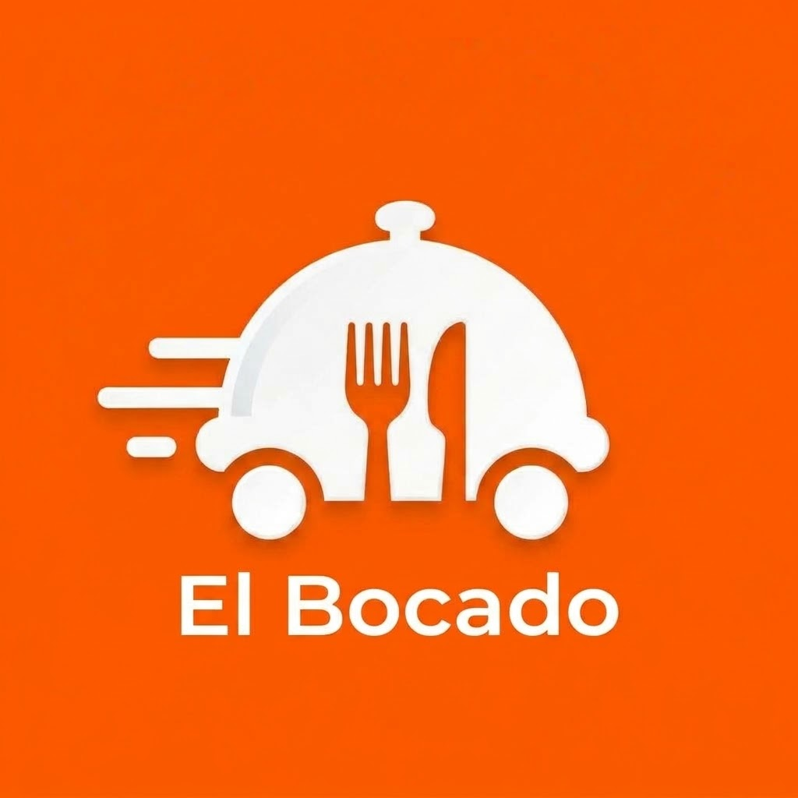
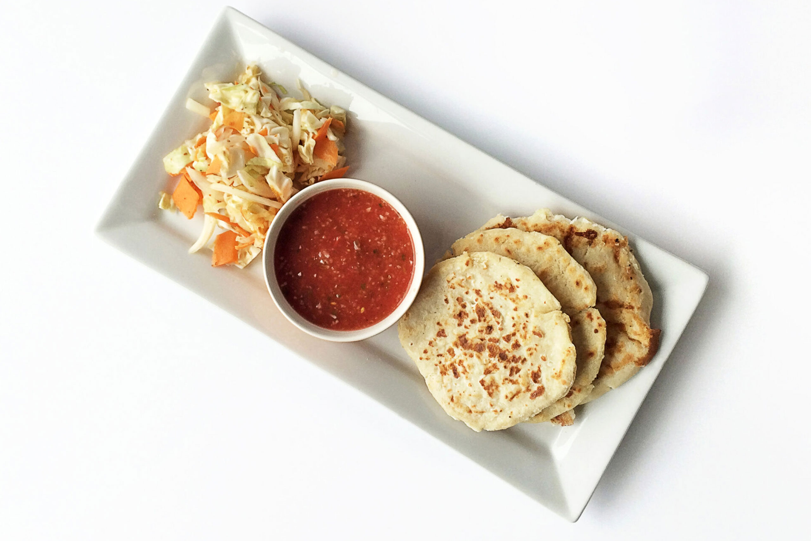
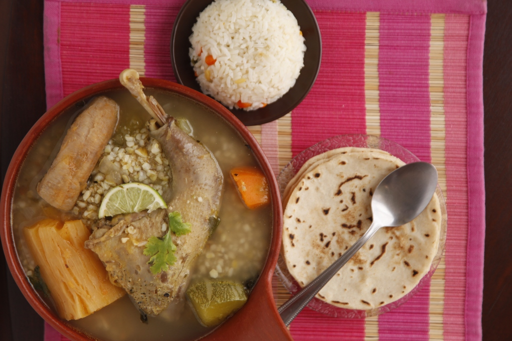
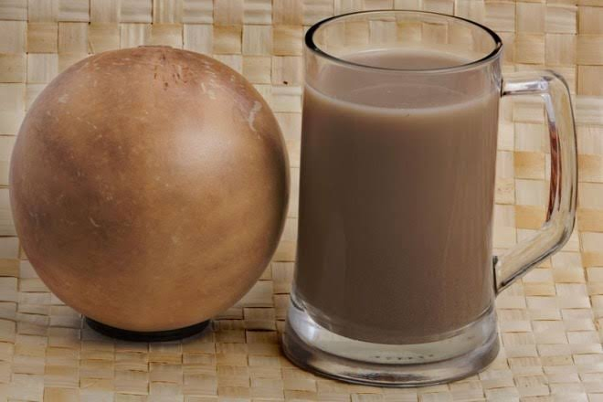

Ingredientes del día
Compramos verduras, carne y pescado cada mañana. El maíz de las pupusas se muele en la cocina.
Pupusas en comal, sopa de gallina y café de altura. Cocinamos cada día con producto del mercado, en la Colonia Escalón desde 2009.
Compramos verduras, carne y pescado cada mañana. El maíz de las pupusas se muele en la cocina.
La sopa de gallina y los tamales siguen la receta de doña Marta, fundadora del restaurante.
Terraza, salón y un área privada para celebraciones de hasta 20 personas.

El Bocado empezó como un puesto de pupusas frente al mercado de la Escalón. Hoy seguimos con el mismo comal, pero con más mesas y un menú que incluye platos para el almuerzo y la cena.
Trabajamos con proveedores locales y preparamos todo al momento, por eso algunos platos pueden tardar unos minutos más.
Cómo llegar
Dos pupusas con curtido y salsa de tomate.
$3.00

Con verduras, arroz y tortillas hechas al momento.
$8.50

Bebida fría con canela, preparada cada día.
$2.50